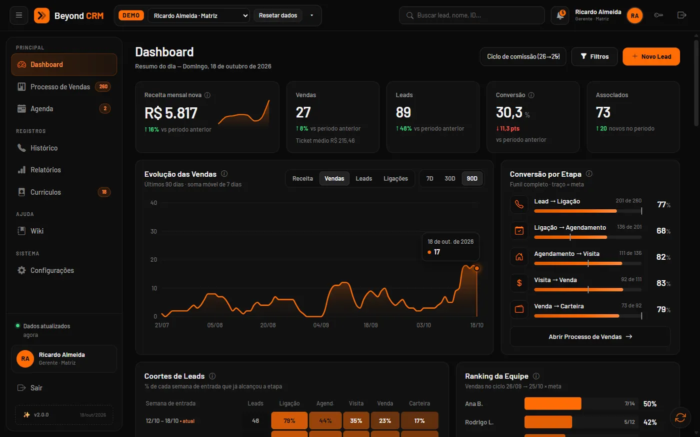
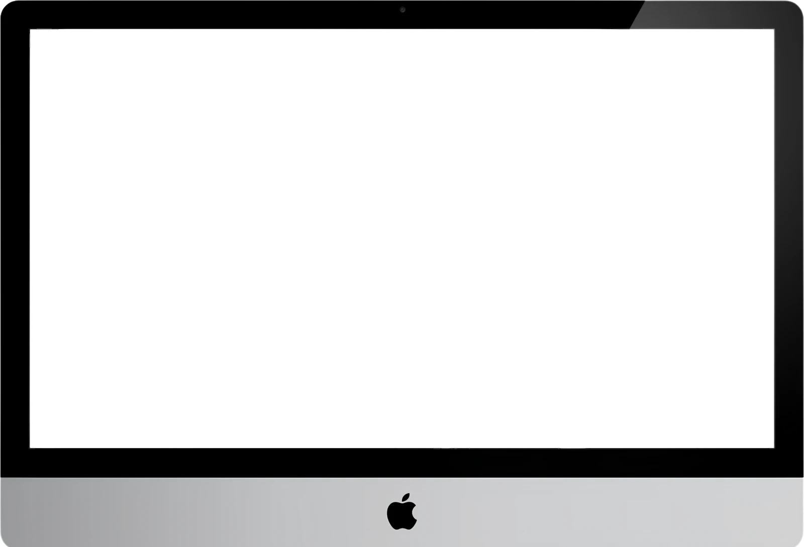
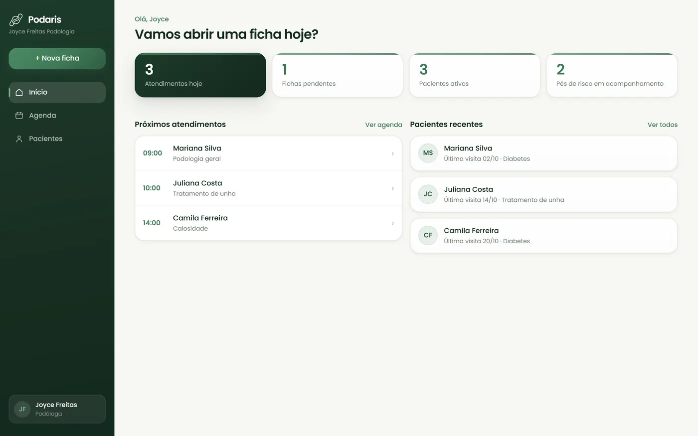
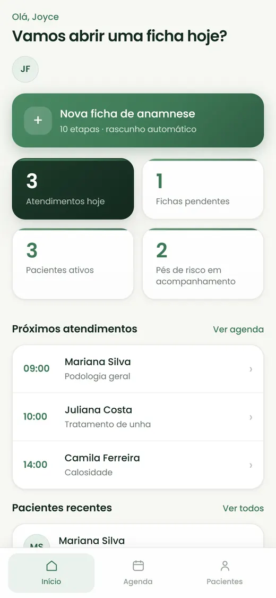
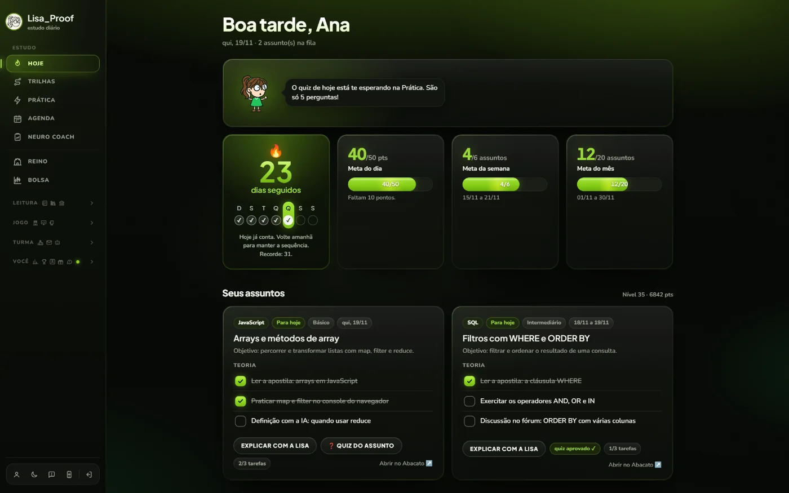
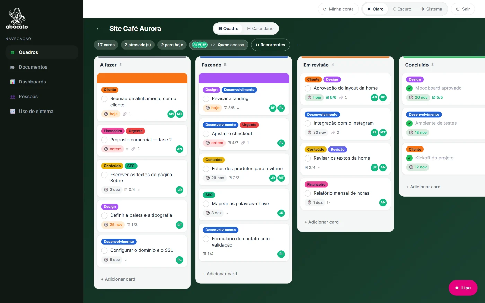
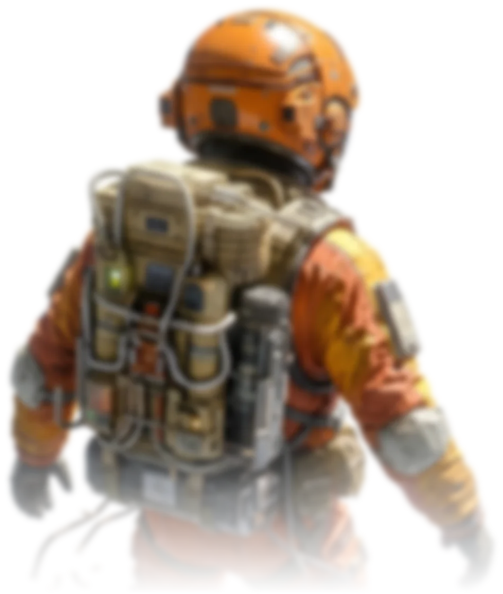

Software & Sistemas
Sistemas feitos para a sua operação: integrações com ERP e CRM, automações e assistentes com IA.


Sistemas feitos para a sua operação: integrações com ERP e CRM, automações e assistentes com IA.
Sites e aplicações web rápidos, com SEO local e interfaces 3D interativas quando elas ajudam a vender.
Identidade visual, interface e experiência pensadas juntas, do logo à última tela do sistema.

Raimundo Pimenta
Co-dono · Amparar Proteção Veicular
“…Acho que ainda iremos desenvolver algo maior no futuro. Seu comprometimento e entrega são inigualáveis.”
Um CRM sob medida para a equipe de vendas: funil em kanban, agenda de ligações, metas e dashboards de conversão.
Ver o CRM Amparar
Dra. Joyce Freitas
Podóloga · Podaris
“Tô me sentindo super chique, doutora demais! Usei pela primeira vez num atendimento de unha encravada, fiz o teste completo com foto de antes e depois e deu super certo!”
O Podaris troca a ficha de papel por um prontuário digital: anamnese em etapas, fotos de antes e depois, agenda e evolução clínica.
Ver o PodarisCada entrega resolve um problema real do negócio: menos papel e planilha, mais clientes chegando e decisões tomadas com os números na mão.
Feitos sob medida para a rotina de cada cliente: tiram a operação do papel e da planilha, acabam com o retrabalho e colocam os números do negócio nas mãos de quem decide.


Cada lead tem etapa, responsável e próxima ligação marcada, então nenhum contato esfria esquecido. Cada vendedor acompanha a própria meta em tempo real, e a gestão vê em que etapa do funil as vendas travam — e age antes de o mês fechar.
“Seu comprometimento e entrega são inigualáveis.” Raimundo Pimenta

A ficha de papel virou prontuário digital: a anamnese guiada não deixa nenhuma pergunta para trás, os pés de risco ficam sinalizados e as fotos de antes e depois mostram ao paciente a evolução do tratamento. Mais segurança clínica, atendimento com cara de clínica grande e o histórico de cada paciente sempre à mão — no computador, no tablet ou no celular.
“Tô me sentindo super chique, doutora demais!” Dra. Joyce FreitasRápidos, bem posicionados no Google da sua região e pensados para virar conversa: quem procura encontra, confia no que vê e chama no WhatsApp.
Uma vitrine que vende sozinha: o cliente escolhe a camisa, confere o tamanho no guia e já chama no WhatsApp ou no Instagram para fechar o pedido.
Visitar o siteAparece para quem procura montador em Justinópolis e Ribeirão das Neves, mostra as avaliações de quem já contratou e transforma a visita em pedido de orçamento no WhatsApp.
Visitar o siteOs pais encontram o brinquedo certo em segundos e pedem orçamento pelo WhatsApp — e o site aparece para quem procura locação de brinquedos em Contagem e BH.
Visitar o siteProdutos que a Beyond cria em casa e usa no dia a dia.
Uma assistente que trabalha junto com a sua equipe: cuida das tarefas do dia a dia e escreve código com você, explicando cada passo. Menos tempo perdido com organização e retrabalho, mais tempo para o que dá resultado.
Oi! Já vou me apresentar.
// a Lisa escreve aquiO que você escreve aqui não sai do seu navegador. É uma demonstração com respostas prontas, não a IA completa.
Os pedidos da demonstração acabaram. A Lisa completa conversa por voz, lê seus documentos e trabalha nos seus projetos.
Conhecer a Lisa completa
Estudar vira hábito: a IA monta uma trilha sob medida, corrige cada exercício na hora e a Lisa acompanha o caminho comemorando cada lição. Ofensiva diária, metas e conquistas fazem a pessoa voltar todo dia — e aprender de verdade.

Os quadros da equipe num lugar só: tarefas, prazos, documentos e dashboards que mostram onde o trabalho trava. E a Lisa cria e atualiza os cards a partir de uma conversa — ninguém perde tempo organizando.
Quer uma dessas trabalhando no seu negócio?
Mostro a demonstração completa e conto o que dá para adaptar para você. Algumas destas ferramentas vão ganhar versão de código aberto, como a Lisa Assistente.
Três etapas, com você acompanhando cada uma. Sem caixa preta do briefing à entrega: o projeto passa pelas estações até virar o sistema pronto, vivo e funcionando.
Entendemos o negócio e o problema antes de escolher a tecnologia.
O sistema é construído por módulos, e cada um chega até você assim que fica pronto.
Testamos com a sua equipe, publicamos e acompanhamos os primeiros meses de uso.

Em 1977, as sondas Voyager partiram levando o Disco de Ouro: cobre banhado a ouro, com sons e imagens da Terra, feito para durar um bilhão de anos no espaço.
Seus dados recebem o mesmo cuidado: protegidos, com cópia de segurança e dentro da LGPD, para a sua empresa crescer sem susto.
Coleta mínima, base legal definida e direitos do titular atendidos, do banco de dados ao botão "excluir conta".
Dados cifrados em trânsito e em repouso, senhas com hash forte e acesso por perfil com permissão mínima.
Cópias criptografadas e automatizadas, com plano de recuperação testado para voltar ao ar rápido.
Repositório, documentação e acessos ficam com a sua empresa. Sem lock-in e sem depender de nós para evoluir.
Todo projeto sai com documentação técnica, mapa de tratamento de dados e acordo de processamento (DPA) quando aplicável.
Conte o que você precisa. Marcamos uma conversa de diagnóstico, sem custo, e você sai dela com o próximo passo definido.